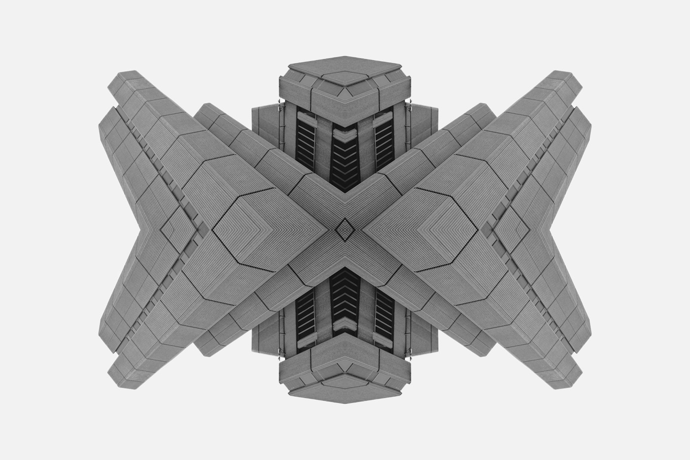

「誰かが作れば全員が死ぬ」の前提を疑う
Eliezer Yudkowskyは2023年の論考と2025年の同名書籍で、同じ一文を繰り返している。「If anyone builds it, everyone dies.」誰かがそれを作れば、全員が死ぬ。この切り詰めた一文の強度は、問題設定そのものを自明視していることから来ている。作る側の主体が存在し、作られる客体が存在し、後者の振る舞いを前者が制御できるかどうかが議論の全てだ、という構えだ。議論の激しさとは裏腹に、この構えは揺らがない。揺らがせてはいけない前提として扱われている。
反対側に立つ加速派も、実は同じ構えを共有している。Marc Andreessenが2023年にa16zで公開した『Techno-Optimist Manifesto』は、Yudkowskyとは正反対の結論を出すが、そこに通底するのは「人間の主体性こそが技術を制御する力である」という主張だ。進めろ、と言うときも、止めろ、と言うときも、両者は制御の二項を前提としている。対立しているのは解答であって、問いではない。
問いの側を疑うことができるだろうか。「制御する主体」と「制御される客体」という非対称は、2000年以上にわたって西洋が鍛え上げた特殊な思考形式だとしたら。別の思想伝統——道家の無為、龍樹の縁起、西田幾多郎の場所論——には、制御以前の秩序を考えるための別の設計原理が埋まっている。それらは「AIを甘く見る楽観論」ではない。制御不能性を前提にしたうえで秩序をどう成立させるかという、別の設計問題だ。本稿はこの仮説を、哲学史と現代サイバネティクスの接点から検討する。
以下のタイムラインは、制御という概念が西洋思想の内部でどう鍛えられてきたかの骨格を示す。Descartesの方法から現代のアラインメント論争まで、一本の系譜が通っていることを確認することから議論は始まる。Yudkowskyの強度は、この系譜の論理的完遂の強度である。
Descartes『方法序説』
cogitoがres extensaを分節・支配する作法を鋳造
Kant『純粋理性批判』
超越論的主体が現象を構成する側に立つ
Wiener『Cybernetics』
書名に"Control"を刻み、制御を学問化
Bostrom『Superintelligence』
制御問題をAIの中心議題に据える
Yudkowsky "If anyone builds it"
制御概念の論理的完遂として不可能論
制御概念の系譜学 — デカルトからサイバネティクスへ
前セクションで提示した系譜を、もう少し解像度を上げて見る必要がある。Descartes『方法序説』(1637)の第2部で定式化された méthode は、単なる研究作法ではなかった。それは主体が対象を認識し、分節し、再構成する一連の手続きであり、その根底には「考える私 (cogito)」と「延長実体 (res extensa)」という非対称が据えられていた。世界を客体として突き放し、主体の側から操作可能なものに変える。この構造がDescartesの発明だ。Kantは『純粋理性批判』(1781)でこれをさらに純化し、主体を「現象を構成する側」に位置づけた。世界の秩序は、主体の認識形式が与える秩序である。
時代を下ると、この哲学的構造が工学に直接翻訳される瞬間が来る。Norbert Wienerが1948年にMIT Pressから刊行した『Cybernetics: Or Control and Communication in the Animal and the Machine』は、書名に"Control"の一語を刻んだ。Wienerはフィードバックループを制御の概念装置として定式化し、その歴史的原型としてJames Wattが1788年に実用化した遠心調速機 (centrifugal governor) を引いた。蒸気機関の回転が速くなるとボールが遠心力で持ち上がり、リンク機構を通じて蒸気弁を絞る。回転が遅くなれば逆に開く。単純な物理装置だが、当時のエンジニアはこれを見て驚いた。機械が自分で自分を調整している、と。
この驚きこそがcontrol理論の原風景であり、同時にそれは「制御する側 / 制御される側」の二項構造を機械に内面化させた歴史的瞬間でもあった。ガバナーは自動的だが、その「自動」の意味は、設計者が設定した目標回転数に向かって系を引き戻す、という非対称のうえで成立している。設計者は系の外にいて、目標を与える主体である。系は内にいて、目標に従う客体である。Wienerの仕事は、この非対称を動物と機械の両方に拡張したことにある。
W. Ross Ashbyが1956年に書いた『An Introduction to Cybernetics』は、この構図にひとつの不吉な定理を加えた。Law of Requisite Variety——調整者の内部多様性が被調整系の内部多様性以上でなければ、制御は論理的に不可能である。計算機の用語で言えば、コントローラのビット数が被コントローラのビット数より少ないと、いかなるフィードバックも有効ではない。この定理は当時の工学者には些細な数学的命題に見えたかもしれないが、70年後にこの一文は予言として読まれることになる。
Yudkowskyの不可能論——「誰かが作れば全員が死ぬ」——の論理的骨格は、実はAshbyの定理の極限形である。人間側の内部多様性が、人間を遥かに上回る内部多様性を持つAIシステムに追いつけなくなった瞬間、制御という設計概念は論理的に破綻する。Yudkowskyが感覚的に言っているものを、Ashbyは68年前に定理として書いていた。したがってアラインメント不可能論は、西洋が鍛えた「制御」という概念の、論理的な完遂の形をとっている。それは一貫している。問題は、その一貫性が特殊な問題設定の内部でしか成立しない、ということだ。
| 時点 | 概念装置 | 主体-客体の構造 | 帰結 |
|---|---|---|---|
| 1637 Descartes |
méthode cogito / res extensa |
主体が客体を分節し、操作対象に変える | 世界を突き放して再構成する作法の確立 |
| 1781 Kant |
超越論的主体 カテゴリー |
主体が現象を構成する側に立つ | 認識の秩序は主体が与えるものになる |
| 1788 / 1948 Watt / Wiener |
centrifugal governor feedback loop |
設計者(外)が目標を与え、機械(内)が追従する | 工学的に翻訳された主体-客体の非対称 |
| 1956 Ashby |
Requisite Variety定理 | コントローラ ≥ 被コントローラ が必要 | 多様性不足の瞬間、制御は論理的に崩壊する |
| 2023-25 Yudkowsky |
アラインメント不可能論 | 人間 < AGI が閾値を越える時点を問題化 | 制御概念の論理的完遂としての死刑宣告 |
制御以前の秩序 — 道家・龍樹・西田
制御の概念の外側に何があるか。道家、中観仏教、京都学派。この三つの思想には、異なる出発点から同じ方向を指す論理がある。本稿は神秘主義的な読み方を採らない。これらを設計原理として読み替える。素引用は摩耗している。重要なのは、古典の言葉が現代複雑系の数学的な語彙とどこで噛み合うかだ。
老子『道徳経』第37章。楼観台本系統の原典は紀元前4世紀頃に成立したとされる。「道常無為而無不為」——道は常に何も為さないが、為さないことがない。蜂屋邦夫訳(岩波文庫 2008)はこれを「道は何事もしないが、何事もなされないことはない」と訳す。通常の解釈は「自然に任せれば全てうまくいく」という神秘主義に寄るが、本稿はもっと冷徹に読む。無為とは、中央制御点の不在が系の自己組織化を阻害しない状態を指す。制御主体を系の外に立てずとも秩序が立ち上がる条件、と翻訳すれば、これは現代複雑系の言葉になる。
具体例で接続しよう。W. Ross Ashbyが1948年に実装したhomeostatという装置がある。4つのユニットが互いの出力を互いの入力としてフィードバックしあい、外から目標を与えられないまま平衡状態に収束する機械だった。Ashbyはこれをultrastabilityと呼んだ。目標を外部から与える必要がない安定性、というこの概念は、老子の無為と原理的に近い。Ashbyは道徳経を読んだ形跡はないが、両者はまったく別の出発点から同じ構造に到達している。このことが重要だ。道家の無為は東洋の神秘ではなく、制御者不在の安定性という設計問題への、独自の解答として読める。
龍樹『中論』(2-3世紀)の中心概念は縁起 (pratītyasamutpāda) である。梶山雄一・上山春平訳『仏教の思想3 空の論理』(1969、角川ソフィア文庫1997に再録)が日本語の決定版と見なされる。縁起はよく「すべては相互依存する」と翻訳されるが、龍樹の論理的射程はそれより鋭い。「主体」も「客体」も、それ自体として独立に存在する自性 (svabhāva) を持たない。両者は関係の中で一時的に成立する差分にすぎない。中論第24章は、この論理を四句分別の形で展開する。
これがアラインメント議論に持ち込むものは破壊的だ。「制御するAI研究者」と「制御されるAIシステム」という分離そのものが、成立根拠を失う。研究者は研究という関係の中で研究者になり、AIシステムはそのシステムが置かれた開発・運用・利用の関係の中でシステムになる。両者は独立に存在する実体ではない。Francisco Varela、Evan Thompson、Eleanor Roschが1991年に書いた『The Embodied Mind』(MIT Press)は、現代認知科学にこの論理を持ち込んだ最初の体系的な仕事だった。Varelaは1987年頃からDalai Lamaが主宰するMind and Life Instituteで中観仏教を再読し、晩年にはenactivism(行為的認知)の基礎にこれを据えた。認知は主体が客体を表象することではなく、相互に規定しあう系の中で立ち上がる現象である、という主張だ。
西田幾多郎『場所』(初出1926『哲学研究』誌)は、この論理を日本の哲学で独立に提示した仕事である。西田は1920年代の『働くものから見るものへ』でアリストテレス以来の「主語の論理」を批判した。西洋論理は、主語 (substance) が述語 (attribute) を持つという非対称の上に立っている。私は赤い、椅子は固い、AIは有害だ。西田はこの主述の非対称を逆転させる。述語こそが場所であり、主語(個物)はその場所の中に包まれる。
西田が好んで使った例は「この赤」という知覚だ。「私がこの赤を見ている」という記述は、実は二重の前提を密輸している。まず「私」という主体の自存性、次に「赤」という客体の独立性。西田はこう書き直す——「見るという場所の中に、私と赤が同時に立ち上がっている」。視覚は主体の機能ではなく、主体と客体の両方を同時に成立させる場である。主体は視覚という場所に包まれて初めて成立する。逆ではない。
AGI議論への転用は直接的だ。「AI研究者がAIシステムを制御する」という記述そのものが、成立する前に二重の密輸をしている。AI研究者はAI研究という場所の中で初めて研究者として成立する。AIシステムは開発・運用・社会受容という場所の中で初めてシステムとして成立する。両者は場所の述語である。「主体が客体を制御する」という構文が、そもそも出発点として採れない。これは制御を放棄せよ、という話ではない。制御という記述自体が、別の記述に置き換えられなければならない、という話だ。
中央制御点なしの自己組織化
道徳経37章の無為を、制御者不在の秩序形成として読み替える。Ashbyのultrastabilityがこれに対応する数学的概念を用意する。
主体-客体の分離そのものの解体
自性の否定は、制御する主体を独立実体として立てることを禁じる。Varelaのenactivismが認知科学版の翻訳を示す。
述語の論理による主述非対称の逆転
場所が個物を包む構造では、主体-客体の記述自体が別形式に書き換わる。多エージェント系の相互規定の設計語彙として使える。
制御なき秩序は設計可能か — 三つの設計原理

ここまでは哲学史の解剖だった。問題は「だから何か」である。哲学的なスケッチを、ガバナンスの設計問題として何に翻訳できるか。本稿は三つの具体的な設計原理を提示する。いずれも、道家・龍樹・西田の論理を現代の工学的語彙に通してある。反論にも先回りして答える。
原理1: Requisite Varietyの相互化。Ashbyの定理を、一方向の制御関係ではなく双方向の学習関係として書き直す。コントローラと被コントローラが一方的に多様性を供給するのではなく、互いに互いの多様性を学習しあう構造を設計する。興味深いことに、これはStuart Russellが『Human Compatible』(2019, Viking)で提示したassistance gamesの方向と近い場所に辿り着く。Russellは西洋哲学の内側から、人間の価値関数をAIに注入するのではなく、AIが人間の価値関数に関する不確実性を保持したまま協調する構造を提案した。この不確実性の保持が、縁起論的な意味での「自性の否定」と構造的に響き合う。Russellは龍樹を読んでいないが、行き着いた場所は遠くない。
原理2: 境界なき自己組織化。AI系の境界を「モデルの重み」に固定しない。訓練データ、デプロイ環境、ユーザー集合、評価プロセス、さらにはその全体を支える電力・冷却インフラまで含む広義のシステムとして記述する。縁起の論理を工学に翻訳するとこうなる。Anthropicの"Constitutional AI"(Bai et al., arXiv:2212.08073, 2022)は、部分的にこの方向を指しているが、決定的な限界を抱えている。憲法の起草主体を暗黙に西洋近代の個人に置いているのだ。誰かが憲法の条文を書き、それをAIが学習する。主体-客体の非対称は保たれたままだ。境界なき自己組織化の設計は、憲法を書く主体そのものを、AIと人間と制度の相互作用の中に溶け込ませなければならない。
原理3: 場所としての規範。個別のAIシステムに「価値を注入」するのではなく、AI-人間-制度の相互作用が展開する場所そのものに規範を埋め込む。西田の場所論の工学的翻訳がここにある。Sheila Jasanoffが『States of Knowledge: The Co-Production of Science and the Social Order』(Routledge 2004)で提示したco-production——科学的知識と社会秩序が相互に生成しあうという論——の哲学的根拠は、実は西田の場所論と同型である。JasanoffはSTS(科学技術社会論)の伝統の内側でこれに到達したが、論理構造は西田のものと重なる。規範は個別主体の内側に注入されるのではなく、関係の場の中で同時に立ち上がる。
ここで当然の反論が出る。「それは責任の所在を曖昧にするだけではないか」。鋭い問いだ。だがこの問いに対する答えは逆である。責任の所在を曖昧にするのは、実は近代西洋の個人-主体モデルの方だ。なぜか。「制御する主体」を措定すると、制御に失敗した時の責任が単一の個人に過剰集中する。過剰集中の予感が、当事者の責任回避行動を生む。誰も決定せず、誰も責任を取らず、全員が「システムの失敗」と呼んで済ます。これは2008年の金融危機、Deepwater Horizon事故、Boeing 737 MAX問題で何度も見た構造だ。縁起的な分散責任モデルは、責任を溶解させるのではなく、関係に責任を埋め込む。設計者、運用者、利用者、規制者、評価者の全員が、関係の場の中で連続的な責任を持つ。これは責任を曖昧にする方向ではなく、責任を分散的に具体化する方向の話である。
西洋近代の設計原理
主体-客体の非対称 設計者が外にいて、系が内にいる。目標は外から与えられ、系はそれに追従する。
価値の注入モデル 個別主体の内側に正しい価値関数を書き込む。書き込みに成功すれば安全、失敗すれば危険。
責任の個人集中 制御した主体が結果の責任を負う。失敗時の責任回避インセンティブが強い。
完遂すればYudkowsky Requisite Varietyの定理を極限まで押すと、AI > 人間の瞬間に破綻する。
縁起・場所の設計原理
相互規定の関係 主体も客体も、関係の中で一時的に成立する差分である。独立実体としては立てない。
場所に規範を埋め込む AI-人間-制度の関係の場そのものに規範を組み込む。個別主体への注入ではない。
分散的連続責任 責任は関係に埋め込まれ、全参加者に連続的に分散する。曖昧化ではなく具体化。
制御不可能性と共存する 制御ではなく自己組織化を設計する。Ashbyのultrastabilityが数学的な接点を用意している。
問いを一段上げる — 制御の彼岸に秩序はあるか
前セクションで提示した三つの設計原理は、まだ工学的に具体化されていない。哲学的スケッチの段階にある。それでもここに立ち止まって一点を確認する必要がある。本稿が主張しているのは、現代のアラインメント論争を解く新しい工学的処方箋を提示することではない。問いの階層を一段上げることだ。
含意を三点に絞る。第一。現代アラインメント論争は、西洋近代が2000年をかけて鍛え上げた認知的構造を普遍と取り違えている。Yudkowskyの不可能論もAndreessenの楽観論も、同じDescartes-Wienerの系譜に立っている。両者の激しい対立は、実は同じ土俵の内部での対立である。土俵の存在そのものは、両者とも問わない。
第二。相対化の先にあるのは「制御の放棄」ではない。それは楽観派の立場であり、悲観派と同じ土俵に立っている。本稿が指しているのは、制御以前の秩序形成という、別の設計問題である。道家の無為、龍樹の縁起、西田の場所論は、この別の問題の最初の語彙を提供する。これらを神秘主義に押し戻すのではなく、Ashby、Varela、Russell、Jasanoffのような現代の仕事と接続するとき、新しい工学の輪郭が見え始める。
第三。この別解はまだ具体化されていない。哲学的な輪郭しかない。だから本稿は「解答」を提示しない。代わりに問いの形を差し替える。既存のアラインメント研究が答えようとしている問い——「AIを制御できるか、その閾値はいつか」——は、本稿の視点からは解くべき問いではなく、解体すべき前提に見える。解体された後に残る問いはこうだ。
AIを制御できるか、ではない。AIと人間と制度を同時に包む場所を、どう設計するか。この場所において、制御という語はもう中心語ではない。中心語は、相互規定、共起、自己組織化、分散的連続責任になる。この語彙でAGIガバナンスを書き直したとき、何が残るか。
この問いは、既存のalignment研究の用語体系では完全には記述できない。新しい語彙が必要になる。その語彙を鍛える作業は、西洋哲学の内側にいる研究者にも、東アジア思想の内側にいる研究者にも、単独では不可能だ。両方の伝統を横断する研究プログラムが必要になる。Varelaが中観仏教と認知科学を接続したように、Jasanoffが科学論と制度論を接続したように、誰かがこの作業を続けなければならない。
「制御する主体」を信じ続ける限り、AIは我々が信じた通りの姿で立ち上がる。問題は、我々が信じているものが、2000年のあいだ鍛えた西洋の幻影かもしれない、ということだ。Yudkowskyが正しいかもしれない。その時、彼が正しいのは、彼の前提の中だけである。前提の外では、問題の形がまだ見えていない。我々はまだ、問うべき問いの入り口にも立っていない。